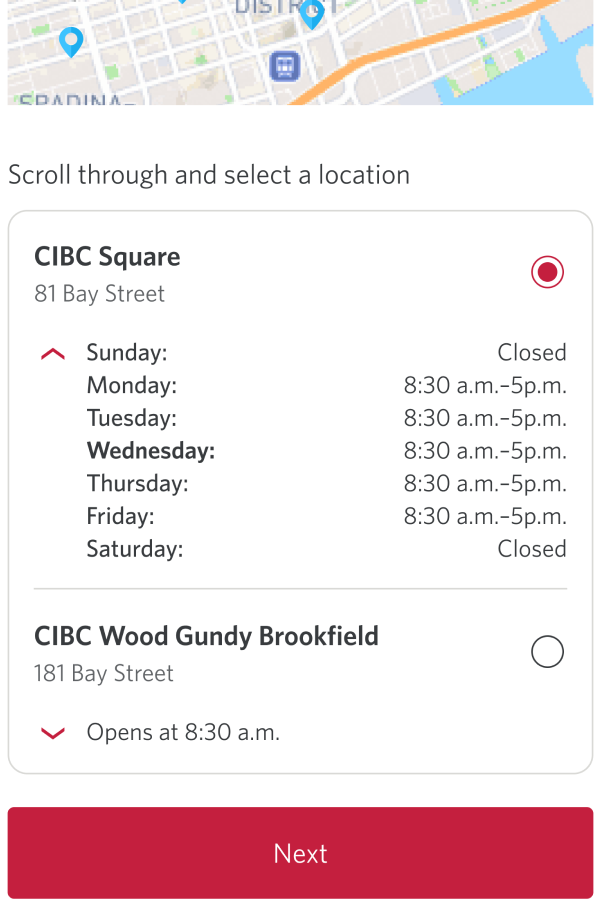

Transforming manual bank draft orders into a digital-first service

Problem
Bank drafts can only be completed in-branch
Tellers handle all bank draft requests in branch, increasing service time and operational load
Customers depend on teller interaction to complete bank draft requests, increasing wait times during their visit
Research
Validating assumptions
Collaborated with the user research team to analyze support call data
Drafted a Figma prototype exploring a high-level flow
Conducted usability testing through Maze with 7 participants
Voice-of-customer feedback
High-level flow
Solution
Leveraging existing Request Centre
Key decision: extend Request Centre instead of creating a separate system, leveraging a familiar mental model and reducing development effort.

Iteration
Designing for offline service constraints
Since bank drafts require in-person issuance, convenience was prioritized.

Simplified financial decision points within the flow
Critical choices like who the draft is payable to and where funds are withdrawn from were broken into distinct fields to reduce cognitive load and errors.

Integrated with existing data hub across pods
We aligned with adjacent product pods (design, PM, and engineering) to ensure the request flow worked within the existing data hub architecture and design patterns.

Design system contribution and evolution
Contributed to the design system by helping it evolve through new flow requirements, aligning new patterns with existing components and reusing system elements to maintain consistency across the experience.